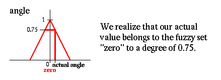
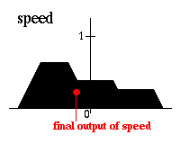

| НЕЧЕТКАЯ ЛОГИКА | |
Введение в нечеткую логику и системы нечеткого управления"A brief course in Fuzzy Logic and Fuzzy Control"by FLLL Перевод с английского С. В. Кряжевских, 1997
Содержание
Введение в основы нечеткой логикиНечеткая логика - новая мощная технологияНечеткая логика возникла как наиболее удобный способ построения систем управления метрополитенами и сложными технологическими процессами, а также нашла применение в бытовой электронике, диагностических и других экспертных системах. Несмотря на то, что математический аппарат нечеткой логики впервые был разработан в США, активное развитие данного метода началось в Японии, и новая волна вновь достигла США и Европы.В Японии до сих пор продолжается бум нечеткой логики и экспоненциально увеличивается количество патентов, большая часть которых относится к простым приложениям нечеткого управления. Термин fuzzy (англ. нечеткий,
размытый -
произносится 'фаззи') стал ключевым словом на рынке.
Статьи по электронике без нечетких компонент постепенно исчезали и пропали
совсем, как будто кто-то закрыл кран. Это показывает насколько стала популярной
нечеткая логика; появилась даже туалетная бумага с напечатанными на ней
словами "Fuzzy Logic".
Нечеткая логика является многозначной логикой, что позволяет определить
промежуточные значения для таких общепринятых оценок, как да|нет, истинно|ложно,
черное|белое и т.п. Выражения подобные таким, как слегка тепло
или довольно холодно возможно формулировать математически и обрабатывать
на компьютерах.
Что такое нечеткое множество?Самым главным понятием систем, основанных на нечеткой логике, является понятие нечеткого (под)множества. Из классической математики известно понятие четких (определенных) множеств. Пример:Рассмотрим множество X всех чисел от 0 до 10, котрое назовем универсумом рассуждения. Определим подмножество A множества X всех действительных чисел от 5 до 8.A = [5,8]Покажем характеристическую функцию множества A, эта функция ставит в соответсвие число 1 или 0 каждому элементу в X, в зависимости от того принадлежит данный элемент подмножеству A или нет. Результат представлен на следующем рисунке:  Эта концепция используется во многих областях приложений. Но можно легко обнаружить ситуации, в которых данной концепции будет недоставать гибкости. В данном примере опишем множество молодых людей. Более формально можно записать так B = {множество молодых людей} Так как, вообще, возраст начинается с 0, то нижний предел этого множества должен быть нолем. Верхний предел определить немного сложнее. На первый раз установим верхний предел, скажем, равным 20 годам. Таким образом, получаем B как четко ограниченный интервал, буквально: B = [0,20] Возникает вопрос: почему кто-то в свой двадцатилетний юбиоей - молодой, а сразу на следующий день уже не молодой? Очевидно, это структурная проблема, и если передвинуть верхнюю границу в произвольную точку, то можно задаться точно таким же вопросом. Более естественный путь получения множества B состоит в ослаблении строгого разделения на молодых и не молодых. Сделаем это, вынося не только (четкие) суждения Да, он|она принадлежит множеству молодых людей или Нет, он|она не принадлежит множеству молодых люей, но и более гибки формулировки ДА, он|она принадлежит к достаточно молодым людям или Нет, он|она не очень молод|молода. На следующей странице рассмотрим как с помощью
нечеткого множества определить такое выражение, как он|она еще молоды.
Как было сказано во введении мы используем нечеткие множества, чтобы сделать компьютер более умным. Представим эту мысль более формализованно. В первом примере мы кодировали все элементы универсума рассуждения с помощью 0 или 1. Простой способ обобщить данную концепцию - ввести значения между 0 и 1. Реально можно даже допустить бесконечное число значений между 0 и 1, называемое единичным интервалом I = [0, 1]. Интерпретация чисел при соотнесении всех элементов универсума рассуждений
становится теперь более сложной. Конечно, снова число 1 ставится в соответствие
(соотносится) тому элементу, который принедлежит множеству B, а
0 означает, что элемент точно не принадлежит множеству B. Все другие
значения определяют степень принадлежности ко множеству B.
Для наглядности приведем характеристическую функцию множества молодых людей, как и в первом примере.  То есть 25-летние все еще молоды со степенью 50 процентов. Теперь вы поняли что такое нечеткое множество. Но что с ним можно делать?
Операции с нечеткими множествамиЧтобы пояснить это, приведем несколько примеров. Пусть A нечеткий интервал от 5 до 8 и B нечеткое число около 4, как показано на рисунке.   Следующий пример иллюстрирует нечеткое множество между 5 и 8 И (AND) около 4 (синяя линия).  Нечеткое множество между 5 и 8 ИЛИ (OR) около 4 показано на следующем рисунке (снова синяя линия). Следующий рисунок иллюстрирует операцию отрицания. Синяя линия - это ОТРИЦАНИЕ нечеткого множества A.
Нечеткое управлениеКонтроллеры нечеткой логики - наиболее важное приложение теории нечетких
множеств. Их функционирование немного отличается от работы обычных контроллеров;
для описания системы используются знания экспертов вместо дифференциальных
уравнений. Эти знания могут быть выражены естесственным образом с помощью
лингвистических
переменных, которые описываются нечеткими множествами.
Пример: Перевернутый маятникПроблема состоит в балансировке вертикальной мачты, подвижно закрепленной нижним концом на тележке, которая может двигаться только в двух направлениях - влево или вправо.Во-первых, мы должны определить (субъективно) что такое высокая скорость, низкая скорость и т.п. для тележки. Это делается описанием функции принадлежности для нечетких множеств.
 Тоже самое делается для угла между тележкой и мачтой маятника и для угловой скорости изменения этого угла  Пожалуйста заметьте, что для упрощения предполагается, что начальное
положение мачты около центра справа, так что угол более чем, скажем,
45 градусов в любом направлении по определению никогда не возникнет.
На следующей странице определим некоторые правила, которые желательно применить в данной ситуации. Сейчас определим несколько правил, которые определяют что делать в данной ситуации. Положим, например, что мачта находится справа (угол равен нулю) и не
двигается (угловая скорость - ноль). Очевидно, что это желаемое положение,
и ничего предпринимать не надо (скорость равна нулю).
Итак, получаем два правила, которые более формально представляются в следующей форме:
| угол | скорость | ОВ ОН 0 ПН ПВ -----------+------------------------------ ОВ | ОВ угл. ОН | ОН 0 скор. 0 | ОВ ОН 0 ПН ПВ ПН | 0 ПН ПВ | НВгде ОВ - Отрицательное Высокое (большое) значение, ОН - Отрицательное Низкое (малое) значение, 0 - нуль и т.д. Для дальнейших расчетов определим численные значения для угла и угловой скорости. Рассмотрим следующую ситуацию: Реальное значение угла: Реальное значение угловой скорости:
Применим правило Если угол равен нулю И угловая скорость равна нулю, тогда скорость равна нулю к реальным значениям переменных.
Проследим получение результата с помощью нечеткого вывода.
1. Если угол равен нулю И угловая скорость равна нулю тогда скорость равна нулю  Получаем, что реальное значение угла принадлежит нечеткому множеству
"ноль" со степенью 0.75.
2. Если угол равен нулю И угловая
скорость равна нулю
тогда скорость равна нулю
Реальное значение угла принадлежит нечеткому множеству "ноль" со степенью
0.75.
3. Если угол равен нулю И угловая
скорость равна нулю
тогда скорость равна нулю
Реальное значение угла принадлежит нечеткому множеству "ноль" со степенью 0.75. Реальное значение угловой скорости принадлежит нечеткому множеству "ноль"
со степенью 0.4.
4. Если угол равен нулю И угловая скорость равна нулю тогда скорость равна нулю
Только четыре правила приводят к результату. Объединим их в одно решение. Таким образом результатом правила Если угол равен нулю И угловая скорость равна нулю тогда скорость равна нулю является:
Результатом правила Если угол равен нулю И угловая скорость отрицательная низкая тогда скорость - отрицательная низкая является:
Результатом правила Если угол положительный малый И
угловая скорость равна нулю тогда скорость - положительная низкая
Результатом правила Если угол положительный малый И угловая скорость отрицательная низкая тогда скорость равна нулю является:
Объединение этих четырех результатов дает общее решение:
Таким образом, решением контроллера нечеткой логики является нечеткое множество (для скорости). Далее необходимо выбрать одно значение для представления конечного выходного значения. Существует несколько эвристических методов (методов дефаззификации), один из которых, например, предполагает выбирать в качестве конечного значения центр тяжести нечеткого множества:  Вся данная процедура получения решения называется контроллером Мамдани
(Mamdani controller).
Приложения нечеткой логикиВо-первых, необходимо определить в общих словах области применения нечеткого управления. Использование нечеткого управления рекомендуется...
Ниже приведены несколько примеров того, как реально применяется нечеткая логика:
(Tokio Electric Pow.) (Hirota, Fuji Electric, Toshiba, Omron) (Omron) (Yamaichi, Hitachi) (Mitsubishi, Sharp) (Nissan) (Nissan, Subaru) (Aptronix, Omron, Meiden, Sha, Micom, Mitsubishi, Nisshin-Denki, Oku-Electronics) (Canon) (Toshiba, Nippon-System, Keihan-Express) (Mitsubishi Elec.) (Inst. of Seismology Bureau of Metrology, Japan) (Kawasaki Medical School) (Matsushita) (Sony) (Canon, Minolta) (Matsushita) (Sanyo) (Matsushita) (Matsushita, Hitatchi) (CSK, Hitachi, Hosai Univ., Ricoh) (Sugeno) (Meihi Gakuin Univ, Nagoy Univ.) (Aptronix, Harima, Ishikawajima-OC Engeneering) (Kawasaki Steel, New-Nippon Steel, NKK) (Hitachi) (NOK, Nippon Denki Tools) (Fujitec, Hitachi, Toshiba) (Hitachi, Bernard, Nuclear Fuel div.) Пример: Система кондиционирования воздуха Mitsubishi
Пример: Камкодер со стабилизатором изображения, MatsushitaОсновные функции:
Блок-схема: ЗаключениеВ заключении данного введения в основы нечеткой логики и нечеткого управления авторы надеются, что краткий курс оказался полезен и все объяснения и примеры как-то помогут Вам в дальнейшем. Заглядывайте на этот
web-сервер, где возможно появится дальнейшая информация по нечеткой
логике. (Последняя редакция: декабрь 1996).
|
|
| НЕЧЕТКАЯ ЛОГИКА |